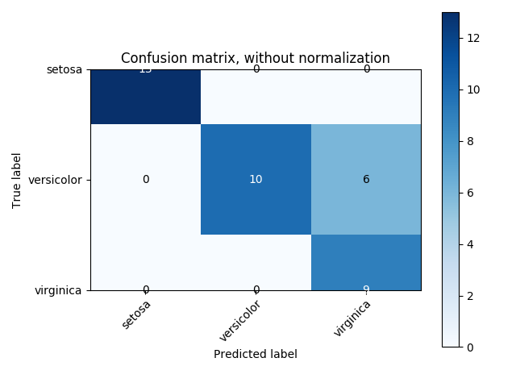
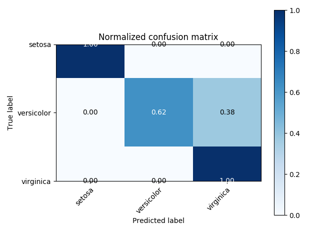

Note
Click here to download the full example code or run this example in your browser via Binder
Confusion matrix¶
Example of confusion matrix usage to evaluate the quality of the output of a classifier on the iris data set. The diagonal elements represent the number of points for which the predicted label is equal to the true label, while off-diagonal elements are those that are mislabeled by the classifier. The higher the diagonal values of the confusion matrix the better, indicating many correct predictions.
The figures show the confusion matrix with and without normalization by class support size (number of elements in each class). This kind of normalization can be interesting in case of class imbalance to have a more visual interpretation of which class is being misclassified.
Here the results are not as good as they could be as our choice for the regularization parameter C was not the best. In real life applications this parameter is usually chosen using Tuning the hyper-parameters of an estimator.
- 
- 
Out:
Confusion matrix, without normalization
[[13 0 0]
[ 0 10 6]
[ 0 0 9]]
Normalized confusion matrix
[[1. 0. 0. ]
[0. 0.62 0.38]
[0. 0. 1. ]]
print(__doc__)
import numpy as np
import matplotlib.pyplot as plt
from sklearn import svm, datasets
from sklearn.model_selection import train_test_split
from sklearn.metrics import confusion_matrix
from sklearn.utils.multiclass import unique_labels
# import some data to play with
iris = datasets.load_iris()
X = iris.data
y = iris.target
class_names = iris.target_names
# Split the data into a training set and a test set
X_train, X_test, y_train, y_test = train_test_split(X, y, random_state=0)
# Run classifier, using a model that is too regularized (C too low) to see
# the impact on the results
classifier = svm.SVC(kernel='linear', C=0.01)
y_pred = classifier.fit(X_train, y_train).predict(X_test)
def plot_confusion_matrix(y_true, y_pred, classes,
normalize=False,
title=None,
cmap=plt.cm.Blues):
"""
This function prints and plots the confusion matrix.
Normalization can be applied by setting `normalize=True`.
"""
if not title:
if normalize:
title = 'Normalized confusion matrix'
else:
title = 'Confusion matrix, without normalization'
# Compute confusion matrix
cm = confusion_matrix(y_true, y_pred)
# Only use the labels that appear in the data
classes = classes[unique_labels(y_true, y_pred)]
if normalize:
cm = cm.astype('float') / cm.sum(axis=1)[:, np.newaxis]
print("Normalized confusion matrix")
else:
print('Confusion matrix, without normalization')
print(cm)
fig, ax = plt.subplots()
im = ax.imshow(cm, interpolation='nearest', cmap=cmap)
ax.figure.colorbar(im, ax=ax)
# We want to show all ticks...
ax.set(xticks=np.arange(cm.shape[1]),
yticks=np.arange(cm.shape[0]),
# ... and label them with the respective list entries
xticklabels=classes, yticklabels=classes,
title=title,
ylabel='True label',
xlabel='Predicted label')
# Rotate the tick labels and set their alignment.
plt.setp(ax.get_xticklabels(), rotation=45, ha="right",
rotation_mode="anchor")
# Loop over data dimensions and create text annotations.
fmt = '.2f' if normalize else 'd'
thresh = cm.max() / 2.
for i in range(cm.shape[0]):
for j in range(cm.shape[1]):
ax.text(j, i, format(cm[i, j], fmt),
ha="center", va="center",
color="white" if cm[i, j] > thresh else "black")
fig.tight_layout()
return ax
np.set_printoptions(precision=2)
# Plot non-normalized confusion matrix
plot_confusion_matrix(y_test, y_pred, classes=class_names,
title='Confusion matrix, without normalization')
# Plot normalized confusion matrix
plot_confusion_matrix(y_test, y_pred, classes=class_names, normalize=True,
title='Normalized confusion matrix')
plt.show()
Total running time of the script: ( 0 minutes 0.298 seconds)